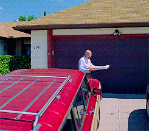

Pepperoni Pizza from Breaking Bad
Table of Contents
About the Movie
Ingredients
Instructions

About the Movie
Mild-mannered high school chemistry teacher Walter White thinks his life can't get much worse. His salary barely makes ends meet, a situation not likely to improve once his pregnant wife gives birth, and their teenage son is battling cerebral palsy. But Walter is dumbstruck when he learns he has terminal cancer. Realizing that his illness probably will ruin his family financially, Walter makes a desperate bid to earn as much money as he can in the time he has left by turning an old RV into a meth lab on wheels.
Genre: Drama, Crime
Original Language: English
Creator: Vince Gilligan
Premiere Date: Jan 20, 2008
Ingredients
- 1 cup tomato-and-basil pasta sauce
- 1 package prebaked whole wheat thin Italian pizza crust
- ¼ cup turkey pepperoni slices (about 24)
- 1 cup part-skim mozzarella cheese
Instructions
Step 1 Spoon tomato-and-basil pasta sauce evenly over crust, leaving a 1-inch border around edges. Top with half of pepperoni slices. Sprinkle with cheese. Top with remaining pepperoni.
Step 2 Bake pizza at 450° directly on oven rack 11 to 12 minutes or until crust is golden and cheese is melted.
Step 3 Cut into 6 slices. Serve immediately.
Return to the top
Return to main page